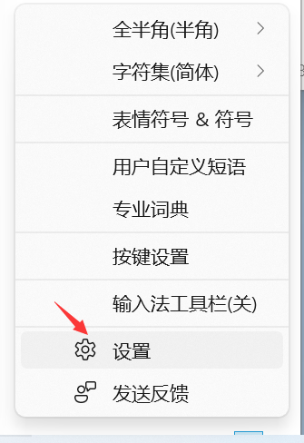
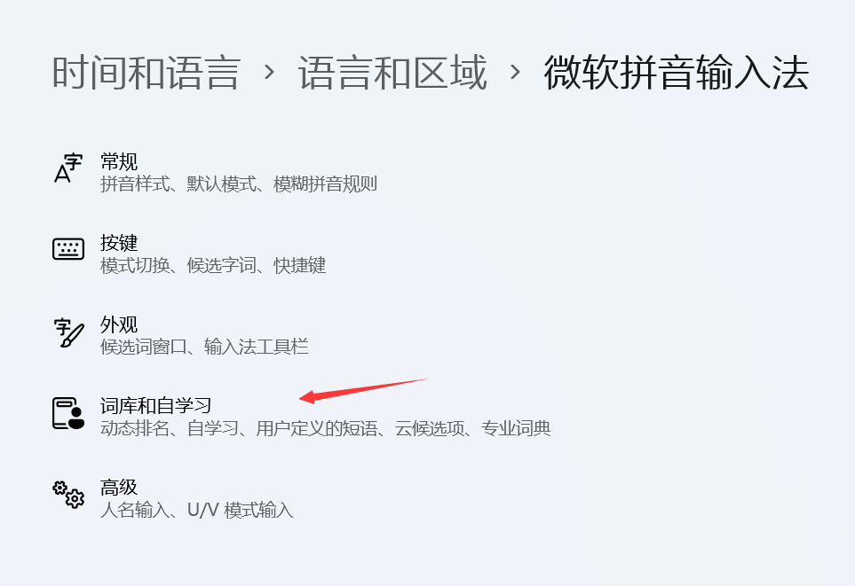
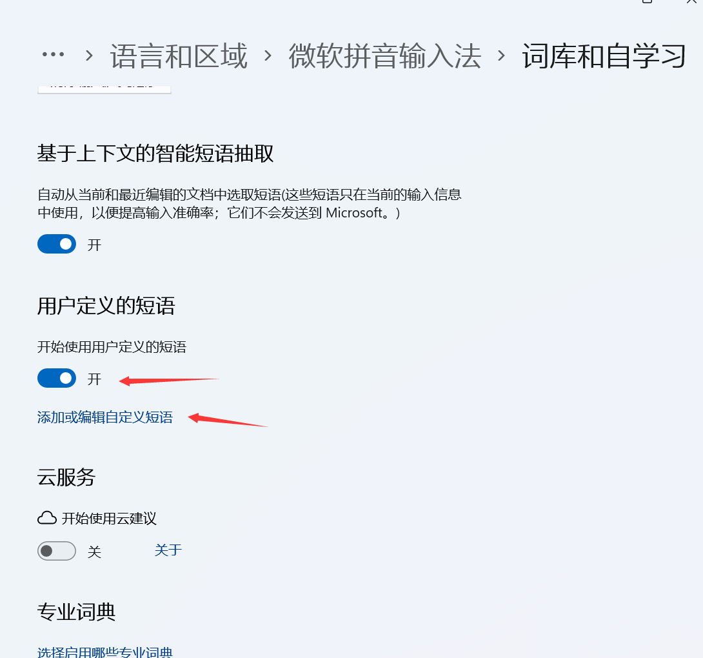
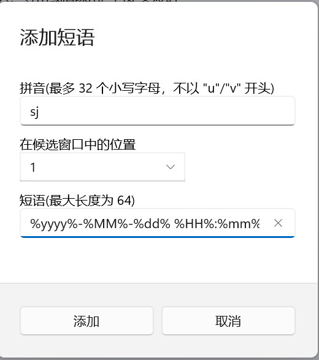

Win10微软输⼊法快速输⼊当前时间 发表于 2022-05-29 更新于 2022-07-16 分类于 小技巧 Win11微软输入法快速输入当前时间 Win11微软输入法快速输入当前时间右键微软输⼊法，选择“设置”；  选择”词库和自学习”:  找到“用户定义的短语”，点击“添加或编辑⾃定义短语”；  点击“添加”，添加自定义短语； 输入自定义快捷拼⾳，“短语”需要输⼊以下代码，也可以自定义输出格式； 12%yyyy%-%MM%-%dd% %HH%:%mm%:%ss%%yyyy%%MM%%dd%_%HH%%mm%%ss%  最后，点击“添加”即可，也可通过同样的方式添加地址等，十分方便。